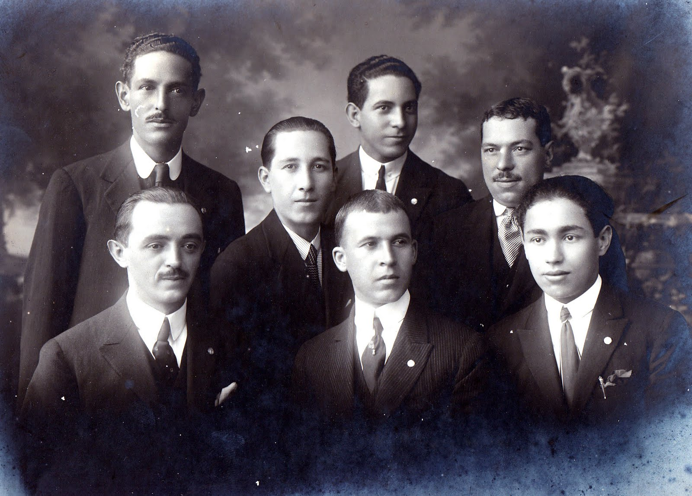

Fundação e Primeiras Glórias
O Corinthians foi fundado em **1º de setembro de 1910**, por um grupo de operários do bairro do Bom Retiro. O nome homenageou o time inglês Corinthian Football Club. Em 1914, o clube conquistou seu primeiro título.
O Jejum e a Democracia Corinthiana
Após um longo período sem grandes títulos (o Jejum), o clube voltou a ser campeão em 1977. Nos anos 80, a **Democracia Corinthiana**, liderada por Sócrates, marcou uma era de autogestão e liberdade.